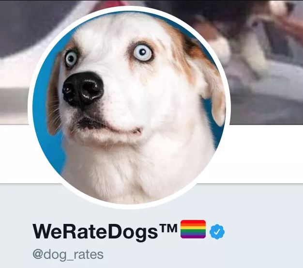
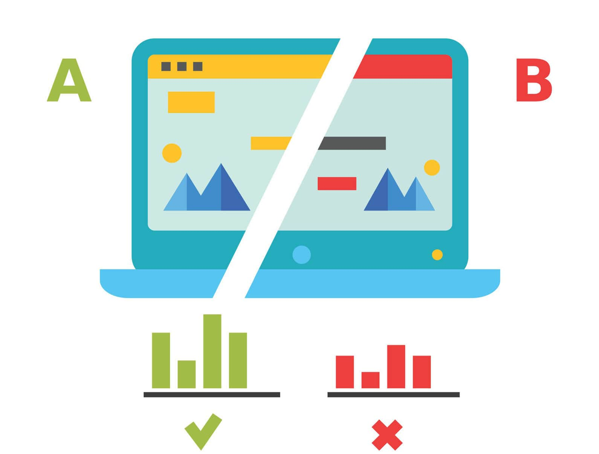

Article
Create a Tableau Story
Completed Date: December 2018
Description
Data visualization using Tableau that tells a story or highlights trends or patterns in a baseball data set.
Practice of data visualization included visual encodings, design principles, and effective communication.
GitHub Repo

Twitter Archive Data Wrangling
Completed Date: December 2018
Description
Data wrangling of the WeRateDogs tweets from twitter. First data gathering, then wrangling followed by analysis with Python.
Numpy, Pandas, Matplotlib, Seaborn, json, and Tweepy used to clean, analyze and visualize the results.
GitHub Repo
Exploratory Data Analysis using R
Completed Date: November 2018
Description
Using R and apply exploratory data analysis techniques in a selected dataset to discover relationships among
multiple variables, and create explanatory visualizations illuminating distributions, outliers, and anomalies.
GitHub Repo
Test a Perceptual Phenomenon
Completed Date: October 2018
Description
Using descriptive statistics and a statistical test to analyze the Stroop effect using Python.
Results interpretation in terms of hypotheses based on computed statistics results.
GitHub Repo

Analyzing A/B Test Results
Completed Date: September 2018
Description
Using A/B test to determine wheather should implement new page or keep the old page. Bootstrapping, linear regression modeling
and t-test were used in this analysis. Python matplotlib used to visualize the results.
GitHub Repo
Investigate a Dataset
Completed Date: August 2018
Description
Analyze a dataset by using the Python libraries NumPy, pandas, and Matplotlib to make the analysis easier.
GitHub Repo
Exploring Bikeshare Data
Completed Date: Jun 2018
Description
Explore the data related to bike share systems for three major cities in the United States—Chicago using Python Pandas
Create an interactive experience in the terminal to present the statistics result.
GitHub Repo
Exploring Weather Trends
Completed Date: Jun 2018
Description
Analysis on local and global temperature data and compare the temperature trends where you live to overall global temperature trends.
GitHub Repo